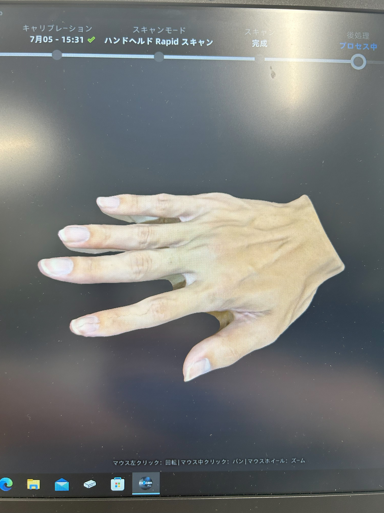
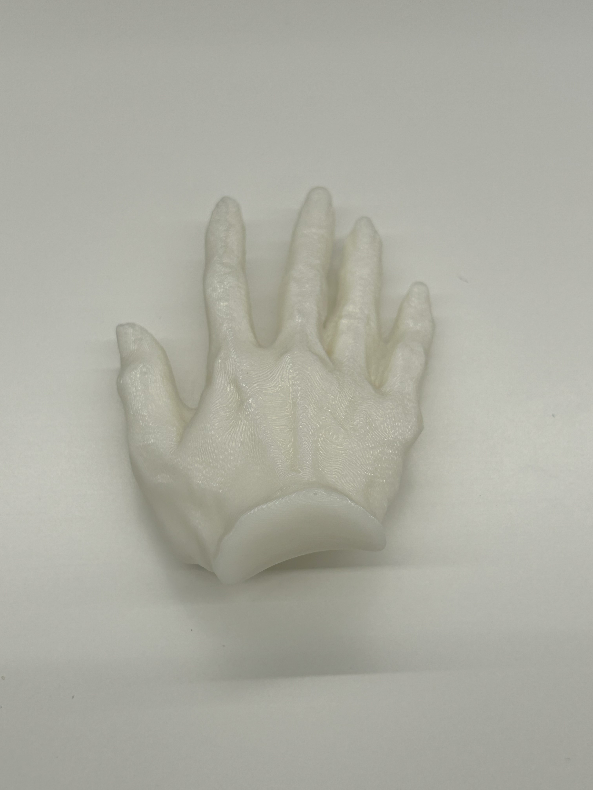
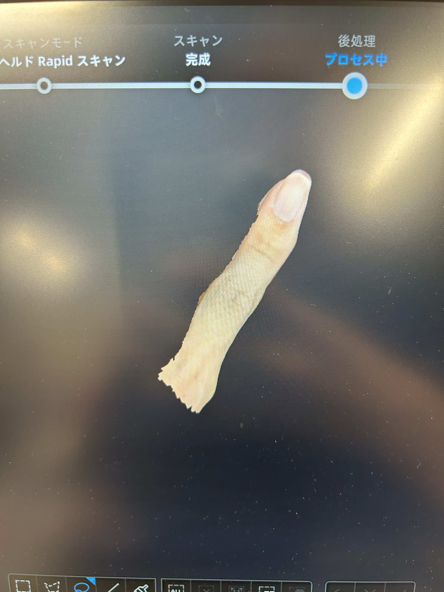
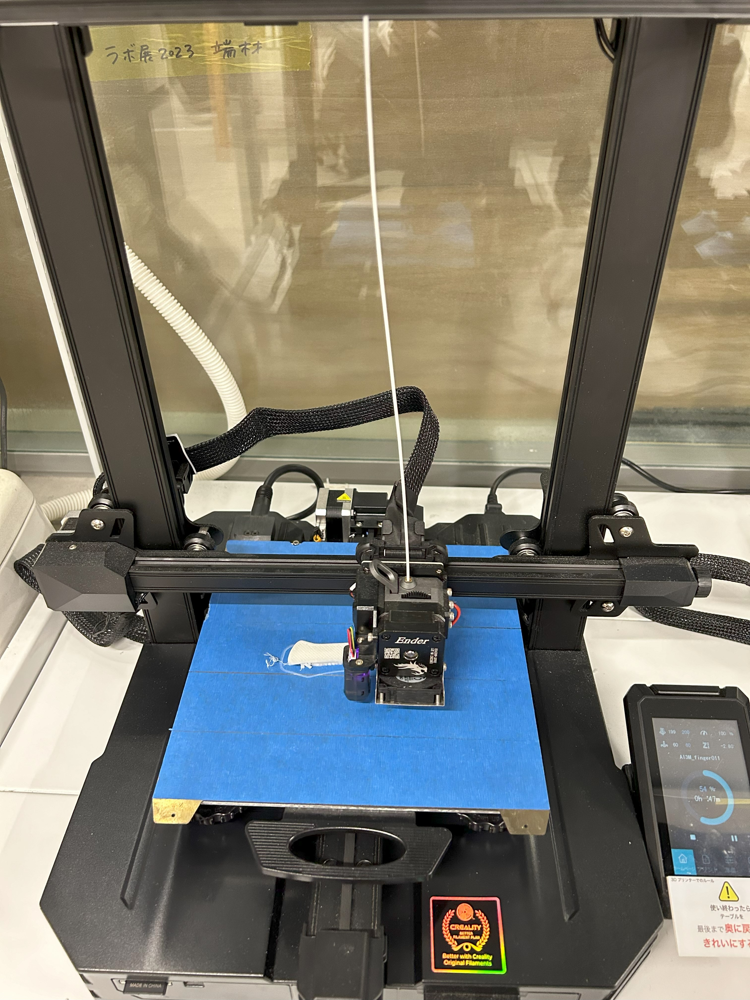
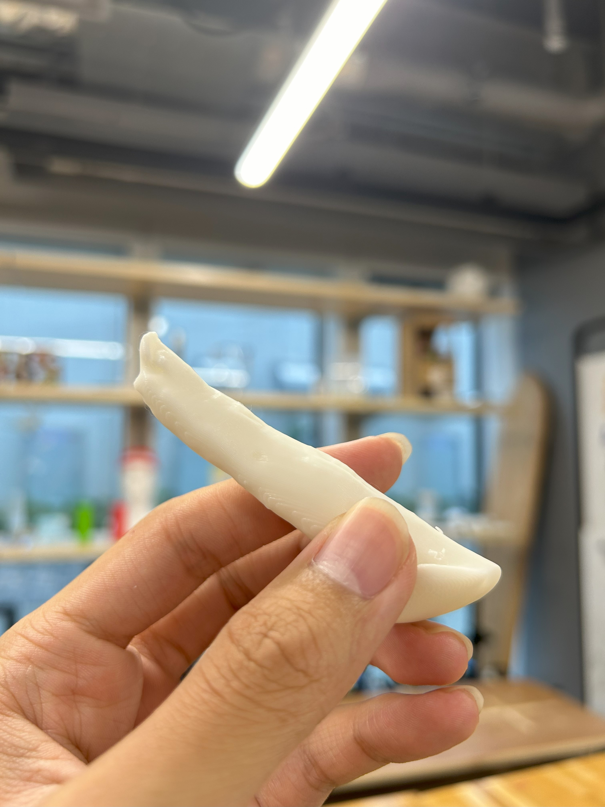

ゲームするときに小指が痛くなる問題について
概要
スマートフォンが世間に普及してから若い世代から自分専用のスマートフォンを持つ人々が増えてきた。
彼らが使う用途の1つとしてスマホのゲームアプリがある。今回インタビューした方の中でスマートフォンでゲームをする際小指が痛くなるという方がいた。
彼の悩みを解消すべく第6の指を創作する。
デジタルファブリケーション機器
プロトタイピングとして今回はFusionで一から生成するのと3Dスキャナーを使ってスキャンデータを3Dプリンターで印刷することにした。
製作過程





反省
前学期のうちにもう少し進める努力が必要だった。夏休み期間をうまく利用して納得のいくところまで完成させこのプロジェクトを完遂したい。